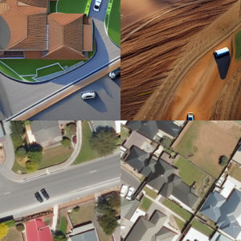
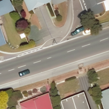
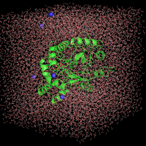
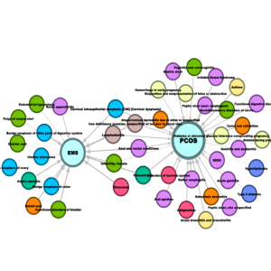
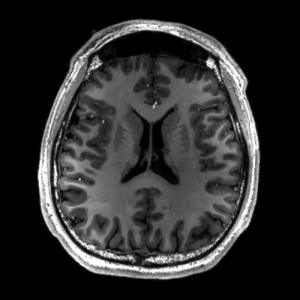
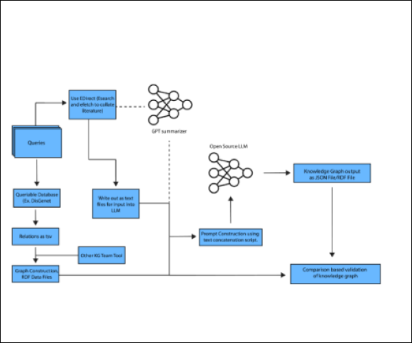
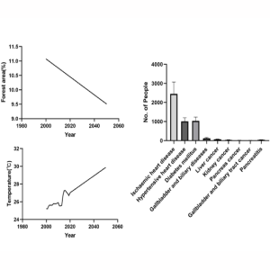

University of Oxford
Oct. 2025 – Present
DPhil in Engineering Science ·
Advised by João F. Henriques and Andrew Zisserman
Advised by João F. Henriques and Andrew Zisserman
Visual Geometry Group
DPhil Student, Department of Engineering Science · University of Oxford
I'm a DPhil researcher at VGG, advised by João F. Henriques and Andrew Zisserman, where I develop generative models for synthetic data generation in the medical imaging domain. Previously, I completed my Master's at Carnegie Mellon University, where I was part of the Human Sensing Lab at the Robotics Institute, advised by Fernando De la Torre. There, I collaborated with the U.S. Army's DEVCOM Army Research Laboratory on domain adaptation and data augmentation for satellite imagery. Earlier, at Korea University, I conducted research on multimodal diagnosis models and cohort studies in reproductive health, advised by Yoonjung Yoonie Joo. I'm broadly interested in making generative models more reliable and trustworthy for clinical use.






